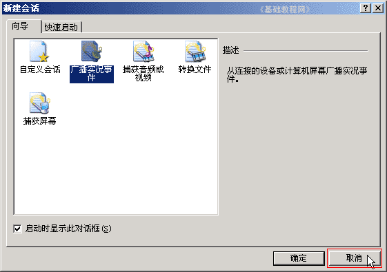
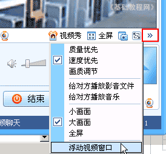
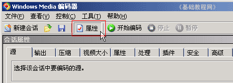
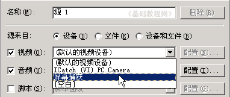
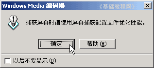
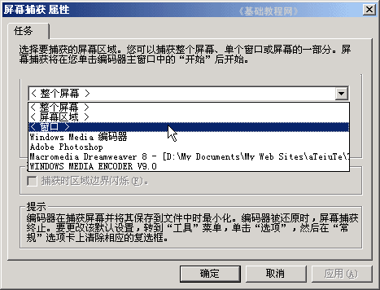
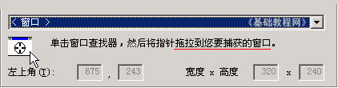
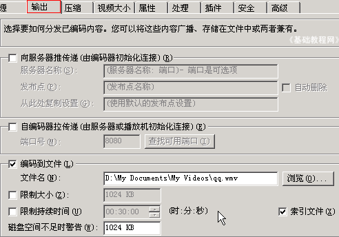
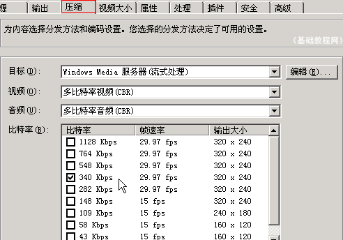
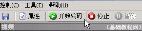

视频编辑 基础入门教程
十、录制QQ视频 返回目录
在QQ上可以进行视频聊天，可以试着录下来存放，注意不得侵犯他人肖像权和版权，需要经过对方同意，下面我们来看一个练习，
我们用Windows Media Encoder来进行录制，同样的方法也可以录制电脑屏幕，进行教学演示；
1、启动视频软件
1）点“开始－所有程序－Windows Media－Windows Media 编码器”，启动编码器，出来一个“新建会话”面板；

2）在出来的“新建会话”面板右下角点“取消”，去掉这个面板；

3）启动QQ视频，跟对方连线后，出来视频面板，
点视频面板中的一排菜单最右边的“>>”按钮，选“浮动视频窗口”，这样视频就单独出来一个窗口，把它移到屏幕右边一些，准备好；

4）回到视频软件的窗口，在工具栏中找到“属性”按钮，点击打开属性面板；

5）在第一个标签“源”的中间，找到“默认的视频设备”，点一下选择“屏幕捕获”，出来一个提示，点“确定”；
 
6）接着点旁边的“配置..”按钮，出来一个配置面板，
在中间的“整个屏幕”长条上点一下，选择“窗口”；

7）然后下面的一个小方框中间是圆按钮，也可以用了，把它拖到视频窗口上松开一下，就锁定了视频面板；

8）然后点上面的“输出”标签，在中间将“编码到文件”勾上，其他去掉，点右边的浏览，找到“我的文档－我的视频”，文件名设为“qq”；

9）在旁边的“压缩”标签中，勾上“340”，其他的去掉，“属性”里面可以输入一些相关内容；

10）都准备好以后，点工具栏上的“开始编码”按钮，就可以录制屏幕了，点旁边的“停止”结束；

本节学习了用Windows Media Encoder录制屏幕的基本方法，如果你成功地完成了练习，请继续学习；
本教程由86团学校TeliuTe制作|著作权所有
基础教程网：http://teliute.org/
美丽的校园……
转载和引用本站内容，请保留版权信息和本站链接。